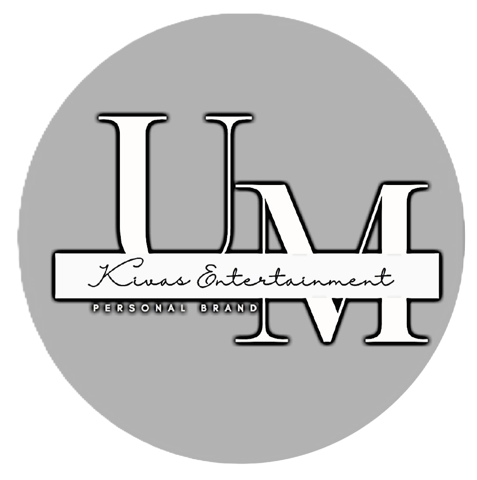
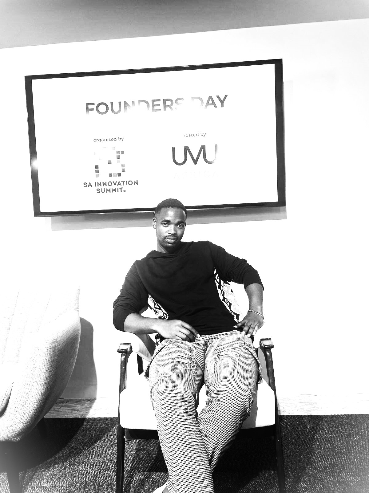
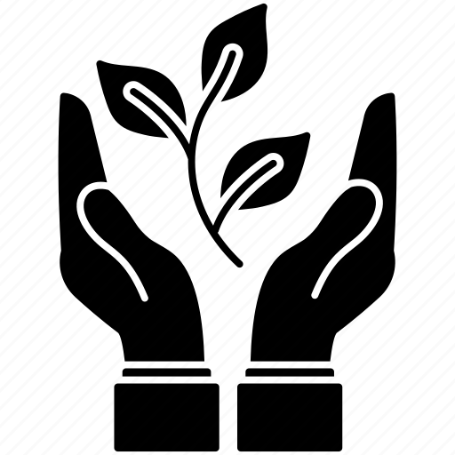
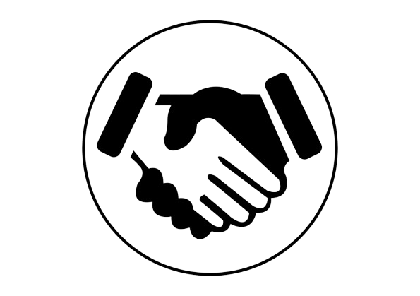
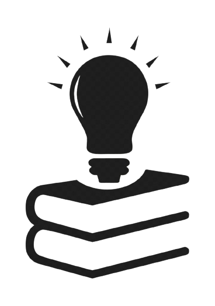
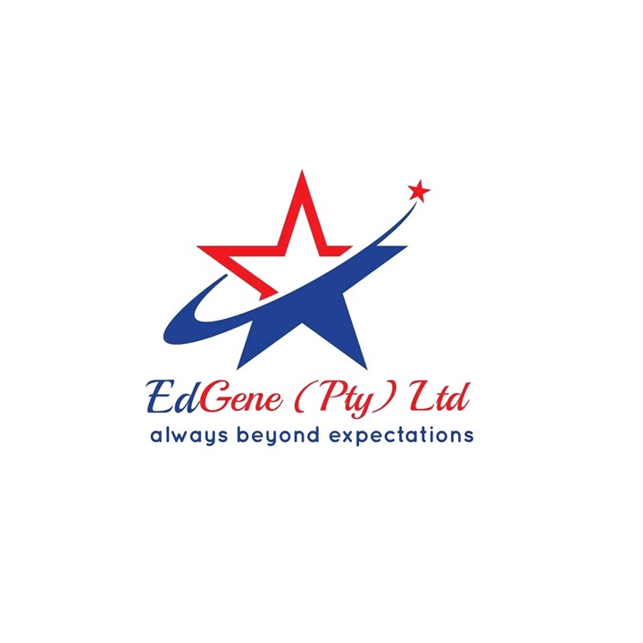
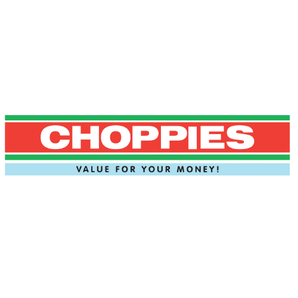
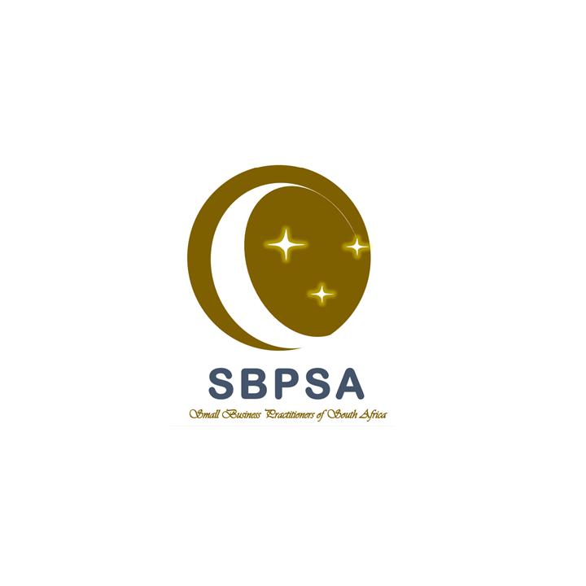
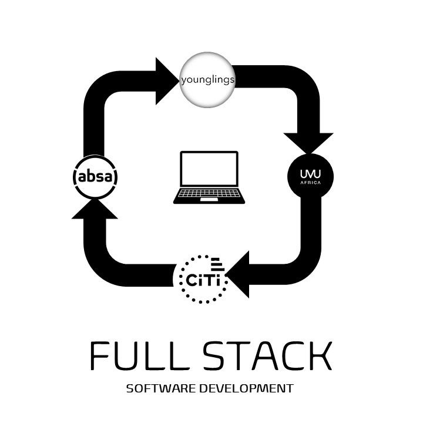

<!DOCTYPE html>
<html lang="en" class="blog_html">
<head>
    <meta charset="UTF-8">
    <meta name="viewport" content="width=device-width, initial-scale=1.0">
    <link rel="stylesheet" type="text/css" href="styles.css">
    <link rel="shortcut icon" href="2.png" type="image/x-icon">
    <script src="index.js"></script>
    <title>Uviwe Makiva</title>
</head>
<body>
    
</body>
</html>
>>>>>>>>>>>>>>>>>>>>>>>>>>>>>>>>>>>>>>>>>>>>>>>>>>>>>>>>>>>>>>>>>>>>>>>>>>>>>>>>>>>>>>>>>>>>>>>>>>>>>>>>>>>>>>>>>>>
<nav class="navbar" id="Home">
    <ul class="home_img">
      <li><a href="#Home"></a></li>
    </ul>

    <ul class="socials">
        <li><a href="https://www.facebook.com/profile.php?id=100009275363960" target="_blank"></a></li>
        <li><a href="https://www.linkedin.com/in/uviwe-makiva-5aa888146/" target="_blank"></a></li>
        <li><a href="https://github.com/Urates?tab=repositories" target="_blank"></a></li>
        <li><a href="mailto:uviwemakiva@gmail.com?subject=Web%20Based%20Query&body=Write%20your%20email%20body%20here"></a></li>
        <li><a href="https://www.instagram.com/uviwe.makiva/" target="_blank"></a></li>
        <li><a href="https://twitter.com/Uviwe76044741" target="_blank"></a></li>
        <li class="socials_text"><p><strong>Reach out to me via these platforms</strong></p></li>
    </ul>
    <ul class="nav_links">
        <li><a href="#Professional_Profile">Professional Profile</a></li>
        <li><a href="#Employment">Employment History</a></li>
        <li><a href="#Edu">Education</a></li>
        <li class="Blog"><a href="blog.html">Blog</a></li>
        <li class="hr_line"><hr></li>
    </ul>
   
        <!--<button id="menu-btn">&#9776; Menu</button>--> 
</nav>

<!--This is the left-positioned image in the home page-->
<div>
<div class="display_picture">

</div>
<!--The following div section covers the text box in the homepage-->
<div class="hometextbox">
<p style="font-size: larger;"><b>Background Information</b></p>
<p>Every now and then I revisit Bentham's philosophy of happiness and in doing so I help myself remember the importance of having two scales through which I can maximise my internal happiness; (i) scale of pleasure, where the focus is primarily to maximise pleasure; (ii) scale of pain, where the focus is to feel the least of this personal feeling. 'Happiness is a matter of experiencing pleasure and lack of pain', says Bentham Jeremy. This is my roadmap to happiness. You should be asking yourself why do I neccesarily have to tell you this?

<p>The answer is simple, I have to be brutally honest about my non-negotiables so that you immediately know how to treat or work in any way with me.</p>
<p>My non-negotiables are pretty simple: (i)Peace, (ii) Happiness, (iii)Life Purpose. It gets even simpler because in this page I also define what these terms mean to me.</p>
<p> The importance for the public to know this is so that I am able to network with everyone seamlessly, having laid down my belief system in a way that helps just about everyone to contextualise before judging my behaviour.</p>
<p>The following outlines the definition of peace in my viewpoint:</p>

<ul class="PHPdef">
  <li class="peace"><p><strong>PEACE</strong></p> <p>Peace in my own dictionary means the synchronised state in mind-soul-spirit system.</p></li>
  <li class="happiness"><p><strong>HAPPINESS</strong></p><p>Happiness is a function of pain reduction and pleasure optimisation.</p></li>
  <li class="purpose"><p><strong>PURPOSE</strong></p><p>The process of naturally giving and receiving love. This can be easily observed from the <b>wu wei</b> state in <b>Taoism</b></p></li>
</ul>
</div>
</div>

<section class="profile" id="Professional_Profile">
<div>
<p style="text-align: center; font-size: larger;">PROFESSIONAL PROFILE</p>
<hr class="hr_line" style="width: 300px;">
</div>

<p>As we grow it becomes hard to pinpoint or to understand our professional values until we encounter a professional environment and I am not immune to this challenge in self-discovery. I think these professional values grow with us as we thrive our way in life with the external environment that hugely shape who we are. A perfect example of this is when I noticed just how I am amazed by the whole idea of prosperity in living things. From plants, animals to other living things everything has a strong desire to witness the future either through offsprings or through any other possible way. This gave me strong instincts in making me want to be part of that global agenda for living things, i.e. outsurviving the stumbling blocks in our evolution through prosperity or fruition of progress.</p>
<p>Not so long ago, I became part of an emerging non profit company whose main objective is to regulate the small business environment. In this company there are four main pillars or values that guide the operations of the company. These values echo a very good abstraction of my professional profile; it is them that make the working environment of this company, Small Business Practitioners of South Africa, conducive even for a professional like me. The following elaborates more on these values:</p>

<div class="profile_grid">
  <!-- This is for prosperity-->
  <div class="item">
    
    <p style="font-size: larger;"><b>PROSPERITY</b></p> 
    <p>"Anyone with the grit mindset that can last for a long time is simply regarded as prosperous for our purposes. This is because grit mindset guarantees the success we want to see in small business owners". This is how prosperity is defined in this company and that perfectly matches to what I mean when I say I value prosperity.</p>
  </div>

  <!--This part is for professionalism-->
  <div class="item">  
    <p style="font-size: larger;"><b>PROFESSIONALISM</b></p>  
    <p>"For our purposes, professionalism shall mean the quality of being skillful or competent, responsible and punctual". This is how the company defines professionalism and I beg not to differ.</p>
  </div>

   <!--This part is for Integrity-->
    <div class="item">
     
    <p style="font-size: larger;"><b>INTEGRITY</b></p> 
    <p>In addition to being the quality of being honest and moral, integrity shall include being transparent, accountable, and time cautious. In this form, integrity is an integral part of my foundational professional values.</p>
  </div>
   <!--This part is for Knowledge-->
  <div class="item">  
  
  <p style="font-size: larger;"><b>KNOWLEDGE</b></p> 
  <p>In information systems studies knowledge shall mean an integrated and organised information acquired both from practical experience and non-practical studies. I want to say I have this viewpoint when I say knowledge is one of my fundamental professional qualities.</p>
</div>
  </div>
</div>
</div>
</section>

<!--The following is for the employment history page-->

<section class="employment_grid" id="Employment">

<div class="items">
<p style="font-size: larger;"><b>EMPLOYMENT HISTORY</b></p> 
<hr style="width: 300px;">
</div>

<div class="items"> 

<h4><strong>EDGENE PTY LTD:</strong> Chief Executive Officer</h4>
<p style="color:rgb(134, 37, 37)">2016 November - now</p>
<p>EDGENE (PTY) LTD, Educated Generation in full, was registered in 2016. This is a research-intensive and education-based company that is now solely focused on digitalising the South African education system to match the behavioural patterns of the current generation.</p>
<p>For more information <button class="btn_link"><a href="https://drive.google.com/file/d/1RSXGs-DvuIfu0pAVwuqEQaypf0AmVhdr/view" target="_blank">Click Here</a></button></p>
</div>
<div class="items"> 
  
  <h4><strong>Choppies:</strong> Fruit and Vegetables Assistant</h4>
  <p style="color:rgb(134, 37, 37)">2017 December Holiday Role</p>
  <p>In 2017 I was doing my 3rd year in my tertiary studies. I went to Limpopo, Northam, as soon as school closed for December holidays. This is where I got a holiday job with Choppies as an assistant in the Fruit and Vegetables department. I got most of my customer service skills here.</p>
</div>
<div class="items"> 

<h4><strong>KM Consultants:</strong> Chief Executive Officer</h4>
<p style="color:rgb(134, 37, 37)">2022 December - now</p>
<p>KM Consultants is a company we recently registered with my co-founder. This company is aimed at adding some value to the non-profit company I co-founded, SBPSA, and EDGENE as they all share a common goal, i.e. see human talents being utilised for the betterment of human civilisation.</p>
<p>For more information <button class="btn_link"><a href="https://drive.google.com/file/d/1eVFROgcvKTJQcA84iMvKXNzO3icApsSO/view?usp=sharing" target="_blank">Click Here</a></button></p>
</div>
<div class="items"> 

<h4><strong>SBPSA:</strong> Operations Manager</h4>
<p style="color:rgb(134, 37, 37)">2022 March - 2023 October</p>
<p>The company is solely focused on regulating or at least professionalising the small business arena. In doing so, the company hopes to boost the South African economy by enlightening the small business owners about the opportunities they are missing just as a result of the environment in which they operate. In other words, the company is seeking corrective measures to ensure that the small business arena gains more investment opportunities.</p>
<p>For more information <button class="btn_link"><a href="https://l.instagram.com/?u=https%3A%2F%2Fdrive.google.com%2Ffile%2Fd%2F1HssXYKlYPXmvv3_HZLaNkEgNohAQ0m4P%2Fview%3Fusp%3Dshare_link&e=AT3sm7PW2mFaHN5vewJyG2KkQZZHZXo_EP0iC3_Eg3kGINbpHEVjUoqNqByCERZawBhR6w11CI57_Y5qGWhQA6zZES4HUd5cUi-blw" target="_blank">Click Here</a></button></p>

</div>
</section>
</div>
</div>
<section id="Edu">
<div class="education">
    <div style="display: block; text-align: center; color: white;">
      <p style="font-size: larger;"><b>EDUCATION</b></p> 
      <hr style="width: 300px;">
    </div>
    <div>
      
      <p>Bachelor of Commerce in Accounting graduate</p>
    </div>
    <div>
      
      <p>BSc in Computer Science_PT (2019 only)</p>
    </div>
    <div>
      
      <p>Full Stack Software Development</p>
    </div>
    <div>
      
      <p>Short courses</p>
    </div>
</div>

<div class="education_overview">
<div class="education_text">
    <p>Here I need to provide some explanatory information on my academic record</p>
</div>
<div class="education_text">

</div>
</div>
</section>